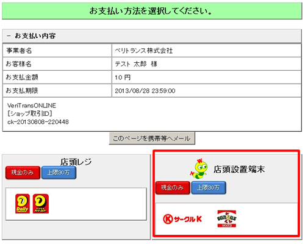
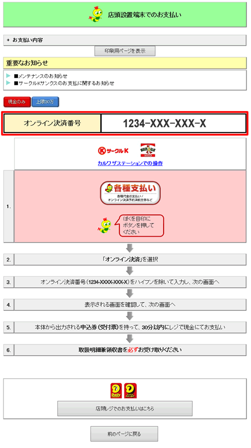
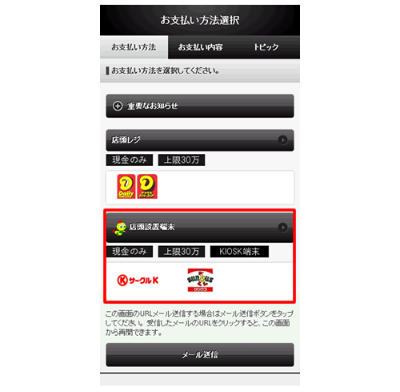
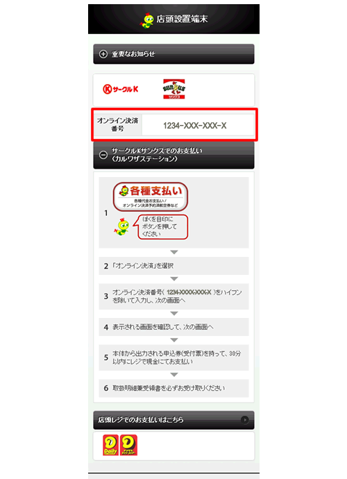
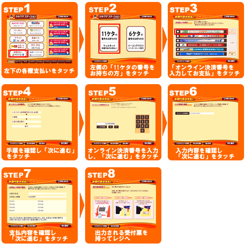

お客様がご注文された商品の代金は、お近くのサークルKまたはサンクス店頭にて現金でお支払いください。
※コンビニ店頭での変更・払戻しはできませんので、予めご了承ください。


＜PCの場合＞
画面上にて、「オンライン決済番号」または「決済画面」を表示いたします。
もしくは、画面上の指示に従い、お手持ちの携帯電話に、支払い方法をご案内するメールを送信してください。
※「オンライン決済番号」は次画面に表示されます。

(次画面)

＜スマートフォンの場合＞

(次画面)
画面上にて、「オンライン決済番号」および端末操作の手順を表示いたします。


「オンライン決済番号」のメモ、プリントアウトした「決済画面」またはお持ちの携帯電話に転送したメール
を持参してください。

サークルKまたはサンクス店頭に設置されているカルワザステーション(情報端末）を用いて、
レジで支払う際に必要な「受付票」を入手してください。
操作はカンタン、画面に従ってタッチパネルを押すだけです。
詳しくは下記をご覧下さい。
|
 |
「受付票」をレジにご提示いただき、代金をお支払いください。お支払いは「現金」となります。
※「受付票」の有効時間は、30分間となっております。お早めにお支払いください。
※コンビニ店頭での変更・払戻しはできませんので、予めご了承ください。
店舗側で入金を確認次第、商品配送の手配をいたします。